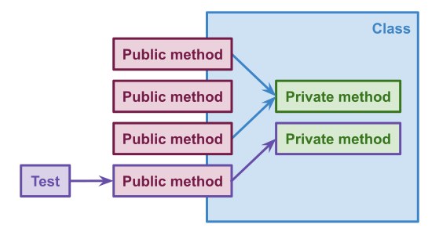
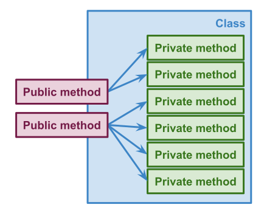
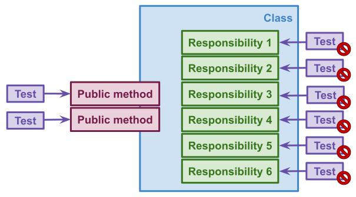
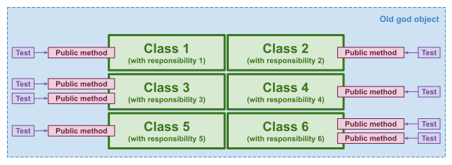

It is pretty easy to make mistakes when you start testing your code. One of the first mistakes I made was to test private methods. Spoiler alert: it was a bad idea because I had to use reflection to make them public to access them. If you need to test a private method, it probably means that your code is not well designed
We don’t test private methods. Private methods are implementation details of objects and we should not care about them. Don’t worry! They are tested in the end. When you test public methods you also test the private ones as described in the next schema.

I needed to test the private methods because my object was a God object (huge object). It did a lot of things. It had a few public methods and a lot of private ones because too many things happened behind the scenes.

The problem with this design is this object did not follow the Single Responsibility Principle, but what is this principle?
There should never be more than one reason for a class to change. In other words, every class should have only one responsibility
My object was super huge because it did too many things. It had too many responsibilities. Because of that, I could not test it easily. How can we avoid that?

It’s better to work on small problems than a big one. The solution would have been to identify each responsibility to extract them into dedicated objects. We don’t need magic tricks to test small objects. It is simple to test them because they do a simple thing, and we only need to use their public API (public method) to test them. We don’t need reflection anymore.

Then, we need to apply the composition pattern to assemble those classes to make them work as the God object. Composition is like playing Lego: we have many small bricks, and we put them together to make a big piece. Software is the same. You should work with small classes/functions to easily test them and piece them together to make your feature.
Let’s take an example. The following class is in charge of importing products into an application as a PIM or an ERP. This class does several things, it gets product data from a CSV file and it imports them into a database. We need to test the whole class to ensure the product import works as expected. That’s a bit annoying because I can’t test the CSV file reading or the production saving.
type Product = {
name: string
description: string
};
class ProductImport {
constructor(private connection: Connection) {}
async import(filePath: string): Promise<void> {
await this.loadProductFromCsvFile(filePath);
}
private async loadProductFromCsvFile(file: string): Promise<void> {
const csvData: Product[] = [];
createReadStream(file)
.pipe(csvParser())
.on('data', (product: Product) => csvData.push(product))
.on('end', async () => {
for (const data of csvData) {
await this.saveProducts(data);
}
});
}
private async saveProducts(product: Product): Promise<void> {
await this.connection.execute(
'INSERT INTO products (name, description) VALUES (?, ?)',
[product.name, product.description],
);
}
}
We need to split this class into smaller ones to ease testing. We will extract both private methods into dedicated classes.
class CsvProductLoader {
async loadProduct(file: string): Promise<Product[]> {
const products: Product[] = [];
createReadStream(file)
.pipe(csvParser())
.on('data', (product: Product) => products.push(product));
return products;
}
}
class MysqlProducts {
constructor(private connection: Connection) {}
async save(product: Product): Promise<void> {
await this.connection.execute(
'INSERT INTO products (name, description) VALUES (?, ?)',
[product.name, product.description],
);
}
}
Now, we can test them stand-alone because these classes expose public methods. We don’t need a magic trick such as reflection to change their visibility to test them.
We still need the ProductImport class. It will depend on both previous classes and act as a controller. It asks CsvProductLoader to get the product information from the CSV file and asks CsvProductLoader to save them into a database.
class ProductImport {
constructor(
private productLoader: CsvProductLoader,
private products: MysqlProducts,
) {}
async import(filePath: string): Promise<void> {
const products = await this.productLoader.loadProduct(filePath);
products.forEach((product: Product) => this.products.save(product));
}
}
That’s great because we extract IO usage into new classes. Both MysqlProducts and CsvProductLoader need to be tested with integration/contract tests since ProductImport can be unit tested.
We need to make a last change. We cannot rely on concrete classes. We need to introduce interfaces to avoid coupling between ProductImport and its dependencies (MysqlProducts and CsvProductLoader).
interface ProductLoader {
loadProduct(file: string): Promise<Product[]>
}
interface Products {
save(product: Product): Promise<void>
}
class ProductImport {
constructor(
private productLoader: ProductLoader,
private products: Products,
) {}
}
Note: I wrote an article about how the inversion dependency design pattern will ease testing. Here is the link: Ease testing thanks to the dependency inversion design pattern
Thanks to my proofreader @LaureBrosseau.